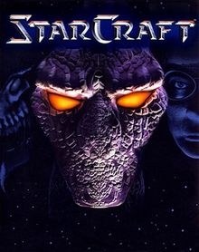
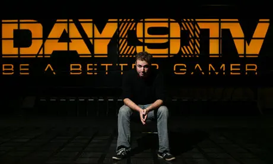

Are marketing taglines effective? Probably not in the way they mean for them to be; but there's no denying that our brains have an uncanny ability to hold onto certain
phrases. I'd be willing to bet money that if you were to say 'Got Milk?' to a Millenial, they could name a commercial that comes to mind from that series of advertisements.
Likewise, if you were to suddenly cry out (in what is going to be an absolutely amazing 90's grunge rock singing voice, guaranteed) "CROSSFIRRRRRE!!!" That we will all know
exactly where it's from.
Are these the shining examples of lines that impacted our lives? Most likely not, and if they have, I feel a disproportionate amount of concern for whatever organ is responsible
for processing the calcium from milk that you abuse daily. If one was to interview different people about lines that have impacted them, you'd like get different answers; and even
people who answer with the same line will likely answer differently when asked how the line impacted them.
Our story begins with a small, impressionable child watching his cartoons on a bright Saturday morning. As we all know, a cartoon is separated by commercials; and what better
commercial to run on a childrens cartoon channel than an advertisement for recruitment for the UNITED STATES MARINE CORPS. Well of course, after all, the Smurfs and the USMC are
so closely related to one another, how can you not advertise in that time slot?
Now, all joking aside; there's a lot that goes into selecting commercial time slots and what cartoons are playing at the time are likely far beneath the concern of network
contractors and this was likely coincidence. So, why is this relevant? Well, back in the olden days, they had a different slogan; at least in regards to their commercial slogan.
It was simply 'Challenge yourself everyday.'
If you were to ask me why that phrase struck such a strong cord with me, I couldn't answer; I doubt even if you asked young me he would have a coherent answer.
Regardless of the reason, I did just that everyday. It ranged from silly child things like throwing a pebble further, to getting a faster stage completion time in a game.
I was never very competitive, even after this...until.

AND MY LIFE WAS FOREVER CHANGED...AGAIN
Chances are, if you've even casually been a part the PC gaming community in the last 20 years, you've likely heard of Starcraft. Even if you haven't, you've probably
seen the memes. I didn't have a PC that could run it...at the time my PC used floppy disks, and if you don't know what those are you probably weren't even alive when
we were using them. However, the gracious and benevolent nerds at Blizzard ported their game to the Nintendo 64; which is where this game entered my life.
Evolution complete.
I eventually entered the digital age and got a computer of my own. A high tech state of the art Windows ME!...it was high tech at the time don't you judge me. Through
this, I was finally able to play Starcraft online; which is when I discovered how different it is compared to playing against bots. To say it was discouraging would be an
understatement, but I kept to it and continued to play dispite not improving nor knowing how to improve. This pattern continued for well over a decade until the release
of Starcraft 2: Wings of Liberty, and the discovery of the Day[9] Daily podcast, which was all about Starcraft strategy.

Sean "Day[9]" Plott is an extremely energetic, positive, and analytical host. He dives deep into game replays and build orders. Watching this podcast increased my skill
and understanding of the game dramatically. More important to our story though, is how Day[9] always talked about the players who continued to fight even in games where
defeat was all but certain, and sometimes even winning. Always cheering them on using the words 'Never give up, never surrender!'. While he meant it more for the sake of
comedic commentary, it still stuck with me.
Life finds a way.
Years passed, I've retired from Starcraft for the most part. In 2015, I discovered web design via w3 Schools and began studying it independantly. It was more of a hobby
rather than a real career choice at this point but I had fun with it. It wouldn't be until the end of 2016, when at work serving food one day and chatting with a table,
that I happened to mention my hobby to someone. This particular individual happened to be in charge of a coding program hosted by a company based in California and invited me
to be a part of it. The program promised a job at said company, provided you pass.
To make a long story short, that year became a very long year. The curriculum was absolutely brutal and ran from January-September of 2017. I was able to pass, though I was
one of the few who did. The words 'Never give up, never surrender' still stuck with me and I was able to push through; I'd never had been prouder of myself prior to that point.
I quit my job and began to make preparations to finally start my web development career, but...
Life had other plans.
The next two months are mostly a blur to me looking back; between mid-September-Halloween, the host company was combined with a sister company by their parent company.
In the reform, redundacies were dropped. This included the department I was going to join, there was no place for me in the new structure. My old job wouldn't take me back
and I was forced to work multiple jobs to pay off the debts I had accrued. My relationship fell apart, I had to give up my apartment and live in my car. I put everything I owned
into storage and slept in the back seat of my car. By November 1st, I had gone from the high point of my life to my lowest point. If I were to say I didn't struggle and strongly
consider giving up, I'd be lying. Still though, the words 'Never give up never surrender' still echoed in my head.
I spent all of 2018 working myself into the ground, 90 hour work weeks between two full time jobs. Paying off my debts, finding a tiny room to rent, and slowly crawling my way
back to financial stablility. Using the word stablility in regards to your finances in California is similar to using the word working when describing code you haven't refactored
in the last couple of hours; but I was at least able to save some money. One year to the day of my collapse into homelessness, I was down to one job, my debts were paid, and I
was ready to start building on the foundation I had just built for myself.
I attempted once again to break into the tech industry late 2018-mid 2019, but the market in my area was virtually non-existant for a junior developer with no degree
with classes from a company who's name no longer registered in memory. Still though, Never give up, never surrender. I wasn't idle, I continued to study via Udemy and Stack
Social, and books, and whatever I could get my hands on. Then we got into 2020...
I don't think more needs to be said about 2020. We'll let sleeping years lie.
How it's going
In late 2020, I flew to Missouri to visit my mother, whom I hadn't seen in years. She'd brought up LaunchCode to me prior, but I never liked the idea of moving out of
California much. Though The last few years, along with the steady decline of the quality of life in the area, had softened the idea to me. So, I made my decision and made the
leap of faith. I quit my job, stored most of what I owned once more, piled my car with whatever I could fit, and drove across the country with no job, and not even an approval
on my application from LaunchCode yet.
That was November of 2020, three years after everything fell apart. I'm not two months into LauncheCode, I have a job that pays me just as well as I was being paid out back
home, I've gotten to see snow for the first time, I have a pet bird for the first time since I was a child. The experience of moving away from everything and everyone I've known
was terrifying and stressful, but it's worked out very well for me so far. For the first time in years, I'm looking forward to what the year will bring; and I owe much of that to
the random words of an nerdy podcast host.